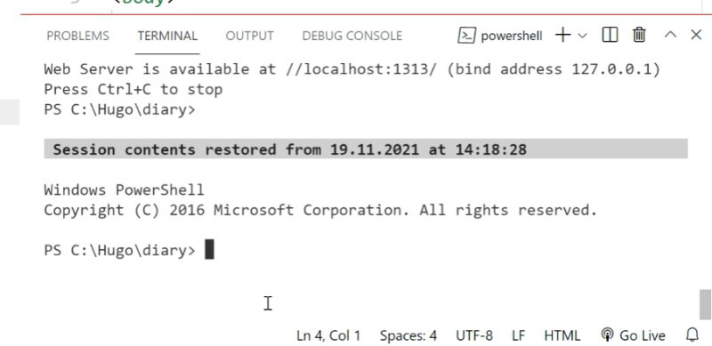

Create New Hugo Theme With Bootstrap
Hugo BootstrapHow to create new Hugo theme
Creating a Hugo Theme From Scratch described here: Retrolog
Samples of the design elements for my theme were taken from Bootstrap
Start Hugo server to view your website on localhost: 